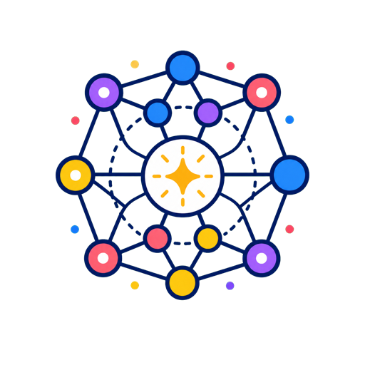

Machine Learning Theory
Understanding learning, generalization, and model behavior.
Hello, I'm Peizhong Ju, an Assistant Professor in the Department of Computer Science of University of Kentucky. I earned my Ph.D. degree from Purdue University in 2021 and my B.S. degree from Peking University in 2016.
My research area includes machine learning, smart grid, optimization, and wireless communication. My recent research focuses on theories for explaining the performance of machine learning models. Before that, I worked on power systems and wireless communication. Generally speaking, the goal of my research is to use rigorous mathematical analysis (including probability theory, optimization, game theory, and random matrix theory) to understand the fundamental limits of a complex system under uncertainty and/or disturbance.
You can contact me at peizhong.ju@uky.edu
My office location and phone number are available on my faculty webpage at University of Kentucky.
My CV (as a pdf file) is here (Last updated: Sep 3, 2026).
Check out my Google Scholar profile for a list of my publications.

Understanding learning, generalization, and model behavior.
Finding efficient solutions under competing objectives.
Building resilient energy systems with renewable resources.
Studying reliable connections and efficient information flow.
@inproceedings{li2026optimalparallelschedulingconcave,
title={Optimal Parallel Scheduling under Concave Speedup Functions},
author={Li, Chengzhang and Ju, Peizhong and Eryilmaz, Atilla and Shroff, Ness B.},
booktitle={International Symposium on Theory, Algorithmic Foundations, and Protocol Design for Mobile Networks and Mobile Computing (MobiHoc)},
year={2026},
note={Accepted},
url={https://arxiv.org/abs/2509.01811}
}
@inproceedings{li2026priority,
title={Priority-Aware Encoding for Bandwidth-Efficient Real-Time Classification in 5G Networks},
author={Li, Chengzhang and Ju, Peizhong and Eryilmaz, Atilla and Shroff, Ness B.},
booktitle={International Symposium on Modeling and Optimization in Mobile, Ad hoc, and Wireless Networks (WiOpt)},
year={2026}
}
@inproceedings{soni2026lp,
title={An LP-based Sampling Policy for Multi-Armed Bandits with Side-Observations and Stochastic Availability},
author={Soni, Ashutosh and Ju, Peizhong and Eryilmaz, Atilla and Shroff, Ness B.},
booktitle={International Symposium on Modeling and Optimization in Mobile, Ad hoc, and Wireless Networks (WiOpt)},
year={2026}
}
@article{fereidouni2025evaluating,
title={Evaluating Sparse Autoencoders for Monosemantic Representation},
author={Fereidouni, Moghis and Haider, Muhammad Umair and Ju, Peizhong and Siddique, AB},
journal={arXiv preprint arXiv:2508.15094},
year={2025}
}
@inproceedings{li2025two,
title={Two Levels Are All You Need: Simplifying Data Compression for Timely Edge Classification},
author={Li, Chengzhang and Ju, Peizhong and Eryilmaz, Atilla and Shroff, Ness},
booktitle={Proceedings of the Twenty-sixth International Symposium on Theory, Algorithmic Foundations, and Protocol Design for Mobile Networks and Mobile Computing},
pages={301--310},
year={2025}
}
@inproceedings{nair2025fsl,
title={FSL-SAGE: Accelerating Federated Split Learning via Smashed Activation Gradient Estimation},
author={Nair, Srijith and Lin, Michael and Ju, Peizhong and Talebi, Amirreza and Bentley, Elizabeth and Liu, Jia},
booktitle={International Conference on Machine Learning},
year={2025},
organization={PMLR}
}
@inproceedings{deng2025unlocking,
title={Unlocking the Power of Rehearsal in Continual Learning: A Theoretical Perspective},
author={Deng, Junze and Wu, Qinhang and Ju, Peizhong and Lin, Sen and Liang, Yingbin and Shroff, Ness},
booktitle={International Conference on Machine Learning},
year={2025},
organization={PMLR}
}
@inproceedings{
li2024find,
title={How to Find the Exact Pareto Front for Multi-Objective {MDPs}?},
author={Yining Li and Peizhong Ju and Ness B. Shroff},
booktitle={The Thirteenth International Conference on Learning Representations},
year={2025}
}
@inproceedings{
liang2024theory,
title={Theory on Score-Mismatched Diffusion Models and Zero-Shot Conditional Samplers},
author={Yuchen Liang and Peizhong Ju and Yingbin Liang and Ness Shroff},
booktitle={The Thirteenth International Conference on Learning Representations},
year={2025}
}
@inproceedings{
liang2024broadening,
title={Broadening Target Distributions for Accelerated Diffusion Models via a Novel Analysis Approach},
author={Yuchen Liang and Peizhong Ju and Yingbin Liang and Ness Shroff},
booktitle={The Thirteenth International Conference on Learning Representations},
year={2025}
}
@inproceedings{xu2025psmgd,
title={PSMGD: Periodic stochastic multi-gradient descent for fast multi-objective optimization},
author={Xu, Mingjing and Ju, Peizhong and Liu, Jia and Yang, Haibo},
booktitle={Proceedings of the AAAI Conference on Artificial Intelligence},
volume={39},
number={20},
pages={21770--21778},
year={2025}
}
@inproceedings{ju2024can,
title={Can We Theoretically Quantify the Impacts of Local Updates on the Generalization Performance of Federated Learning?},
author={Ju, Peizhong and Yang, Haibo and Liu, Jia and Liang, Yingbin and Shroff, Ness},
booktitle={Proceedings of the Twenty-fifth International Symposium on Theory, Algorithmic Foundations, and Protocol Design for Mobile Networks and Mobile Computing (MobiHoc'24)},
pages={141--150},
year={2024}
}
@inproceedings{li2024efficient,
title={Efficient Multi-dimensional Compression for Network-edge Classification},
author={Li, Chengzhang and Ju, Peizhong and Eryilmaz, Atilla and Shroff, Ness},
booktitle={Proceedings of the Twenty-fifth International Symposium on Theory, Algorithmic Foundations, and Protocol Design for Mobile Networks and Mobile Computing (MobiHoc'24)},
pages={91--100},
year={2024}
}
@inproceedings{
ju2024achieving,
title={Achieving Fairness in Multi-Agent {MDP} Using Reinforcement Learning},
author={Peizhong Ju and Arnob Ghosh and Ness Shroff},
booktitle={The Twelfth International Conference on Learning Representations},
year={2024},
url={https://openreview.net/forum?id=yoVq2BGQdP}
}
@inproceedings{liachieving,
title={Achieving Sample and Computational Efficient Reinforcement Learning by Action Space Reduction via Grouping},
author={Li, Yining and Ju, Peizhong and Shroff, Ness},
booktitle={The Twelfth International Conference on Learning Representations},
year={2024},
url={https://openreview.net/forum?id=MOmqfJovQ6}
}
@inproceedings{lin2023theory,
title={Theory on forgetting and generalization of continual learning},
author={Lin, Sen and Ju, Peizhong and Liang, Yingbin and Shroff, Ness},
booktitle={International Conference on Machine Learning},
pages={21078--21100},
year={2023},
organization={PMLR}
}
@inproceedings{jutheoretical,
title={Theoretical Characterization of the Generalization Performance of Overfitted Meta-Learning},
author={Ju, Peizhong and Liang, Yingbin and Shroff, Ness},
booktitle={The Eleventh International Conference on Learning Representations},
year={2023},
url={https://openreview.net/forum?id=Jifob4dSh99}
}
@article{ju2022generalization,
title={On the generalization power of the overfitted three-layer neural tangent kernel model},
author={Ju, Peizhong and Lin, Xiaojun and Shroff, Ness},
journal={Advances in neural information processing systems},
volume={35},
pages={26135--26146},
year={2022}
}
@inproceedings{ju2022distribution,
title={Distribution-level markets under high renewable energy penetration},
author={Ju, Peizhong and Lin, Xiaojun and Huang, Jianwei},
booktitle={Proceedings of the Thirteenth ACM International Conference on Future Energy Systems},
pages={127--156},
year={2022}
}
@inproceedings{ju2021generalization,
title={On the generalization power of overfitted two-layer neural tangent kernel models},
author={Ju, Peizhong and Lin, Xiaojun and Shroff, Ness},
booktitle={International Conference on Machine Learning},
pages={5137--5147},
year={2021},
organization={PMLR}
}
@article{ju2020overfitting,
title={Overfitting can be harmless for basis pursuit, but only to a degree},
author={Ju, Peizhong and Lin, Xiaojun and Liu, Jia},
journal={Advances in Neural Information Processing Systems},
volume={33},
pages={7956--7967},
year={2020}
}
@inproceedings{ju2018adversarial,
title={Adversarial attacks to distributed voltage control in power distribution networks with DERs},
author={Ju, Peizhong and Lin, Xiaojun},
booktitle={Proceedings of the Ninth International Conference on Future Energy Systems},
pages={291--302},
year={2018}
}
@article{nahim2026survey,
title={A Survey of Flow Matching in Reinforcement Learning},
author={Nahim, Nabuat Zaman and Khan, Fairoz Nower and Ju, Peizhong},
journal={Transactions on Machine Learning Research},
year={2026},
url={https://openreview.net/forum?id=P6e5IC4gPe}
}
@article{haider2025neurons,
title={Neurons Speak in Ranges: Breaking Free from Discrete Neuronal Attribution},
author={Haider, Muhammad Umair and Rizwan, Hammad and Sajjad, Hassan and Ju, Peizhong and Siddique, AB},
journal={arXiv preprint arXiv:2502.06809},
year={2025}
}
@misc{alqarni2026foasr,
title={FoA-SR: Faithful or Aesthetic? Profile-Aware Preference Optimization for Real-World Image Super-Resolution},
author={Amjad Mahdi Alqarni and Peizhong Ju},
year={2026},
eprint={2606.10275},
archivePrefix={arXiv},
primaryClass={cs.CV},
url={https://arxiv.org/abs/2606.10275},
}
@misc{khan2026discreteflowmatchingofflineonline,
title={Discrete Flow Matching for Offline-to-Online Reinforcement Learning},
author={Fairoz Nower Khan and Nabuat Zaman Nahim and Peizhong Ju},
year={2026},
eprint={2605.12379},
archivePrefix={arXiv},
primaryClass={cs.LG},
url={https://arxiv.org/abs/2605.12379},
}
@misc{khan2026discretemeanflow,
title={Discrete MeanFlow: One-Step Generation via Conditional Transition Kernels},
author={Fairoz Nower Khan and Nabuat Zaman Nahim and Md Sajid Ahmed and Ruiquan Huang and Peizhong Ju},
year={2026},
eprint={2605.12805},
archivePrefix={arXiv},
primaryClass={cs.LG},
url={https://arxiv.org/abs/2605.12805},
}
@misc{khan2026flowmatchingofflinereinforcement,
title={Flow Matching for Offline Reinforcement Learning with Discrete Actions},
author={Fairoz Nower Khan and Nabuat Zaman Nahim and Ruiquan Huang and Haibo Yang and Peizhong Ju},
year={2026},
eprint={2602.06138},
archivePrefix={arXiv},
primaryClass={cs.LG},
url={https://arxiv.org/abs/2602.06138},
}
@article{ju2023generalization,
title={Generalization performance of transfer learning: Overparameterized and underparameterized regimes},
author={Ju, Peizhong and Lin, Sen and Squillante, Mark S and Liang, Yingbin and Shroff, Ness B},
journal={arXiv preprint arXiv:2306.04901},
year={2023}
}
@article{soni2025best,
title={BeST--A Novel Source Selection Metric for Transfer Learning},
author={Soni, Ashutosh and Ju, Peizhong and Eryilmaz, Atilla and Shroff, Ness B},
journal={arXiv preprint arXiv:2501.10933},
year={2025}
}
Feel free to reach out to me by email:
You can also find me on Google Scholar:
https://scholar.google.com/citations?user=VDzpfOYAAAAJ&hl=en
My ORCID iD:
https://orcid.org/0000-0002-4569-3539